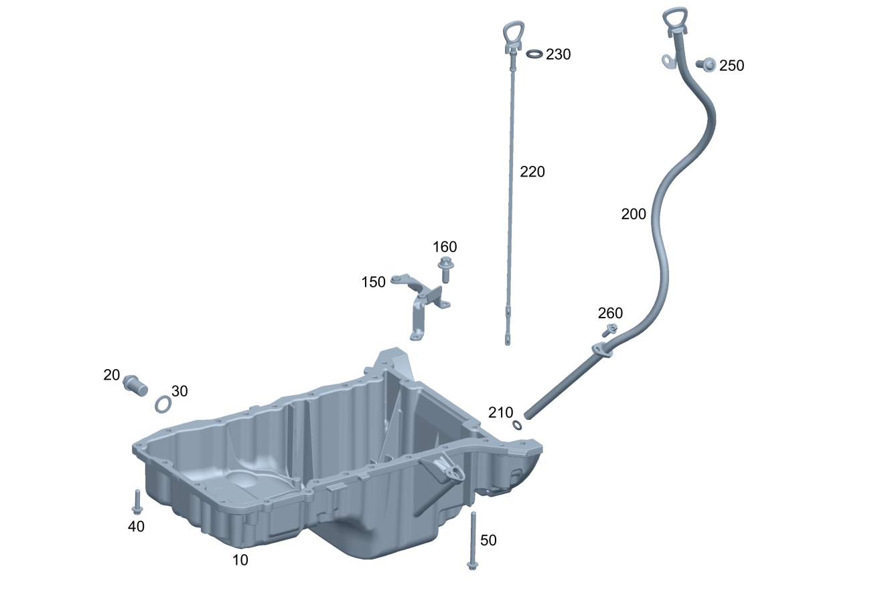

| № | Артикул | Название | Кол. | Примечание |
|---|---|---|---|---|
| 10 | A 274 010 00 13 | Поддон масляный (OIL PAN) | 1 | |
| 10 | A 274 010 36 00 | Поддон масляный (OIL PAN) | 1 | |
| 10 | A 274 010 60 00 | Поддон масляный (OIL PAN) | 1 | |
| 10 | A 274 010 44 02 | Поддон масляный (OIL PAN) | 1 | |
| 10 | A 274 010 60 00 | Поддон масляный (OIL PAN) | 1 | |
| 10 | A 274 010 35 01 | Поддон масляный | 1 | |
| 10 | A 274 010 35 01 | Поддон масляный | 1 | |
| 10 | A 274 014 11 00 | Поддон масляный | 1 | |
| 10 | A 274 014 11 00 | Поддон масляный | 1 | |
| 10 | A 274 014 01 00 | Поддон масляный (OIL PAN) | 1 | |
| 10 | A 274 014 01 00 | Поддон масляный (OIL PAN) | 1 | |
| 10 | A 274 014 01 00 | Поддон масляный (OIL PAN) | 1 | |
| 10 | A 274 014 51 00 | Поддон масляный (OIL PAN) | 1 | |
| 10 | A 274 014 11 00 | Поддон масляный | 1 | |
| 10 | A 274 014 51 00 | Поддон масляный (OIL PAN) | 1 | |
| 10 | A 274 014 63 00 | Поддон масляный (OIL PAN) | 1 | |
| 10 | A 274 014 48 00 | Поддон масляный (OIL PAN) | 1 | |
| 10 | A 274 014 61 00 | Поддон масляный (OIL PAN) | 1 | |
| 10 | A 274 010 87 02 | Поддон масляный | 1 | |
| 10 | A 274 010 19 03 | Поддон масляный | 1 | |
| 10 | A 274 010 01 13 | Поддон масляный | 1 | |
| 10 | A 274 010 86 02 | Поддон масляный (OIL PAN) | 1 | |
| 10 | A 274 010 87 02 | Поддон масляный | 1 | |
| 10 | A 274 010 87 02 | Поддон масляный | 1 | |
| 10 | A 274 010 87 02 | Поддон масляный | 1 | |
| 10 | A 274 010 04 13 | Поддон масляный (OIL PAN) | 1 | |
| 10 | A 274 010 86 15 | Поддон масляный (OIL PAN) | 1 | |
| 10 | A 274 010 19 03 | Поддон масляный | 1 | |
| 10 | A 274 010 88 15 | Поддон масляный (OIL PAN) | 1 | |
| 10 | A 274 010 40 07 | Поддон масляный | 1 | |
| 20 | A 111 997 03 30 | - Пробка, первая заправка (SCREW PLUG, FILLING) | 1 | |
| 20 | A 111 997 03 30 | - Пробка, первая заправка (SCREW PLUG, FILLING) | 1 | |
| 20 | A 111 997 03 30 | - Пробка, первая заправка (SCREW PLUG, FILLING) | 1 | |
| 30 | N 007603 014106 | - Уплотнительное кольцо (SEALING RING) | 1 | Резьбовая пробка к масляному поддону; 14X20\-CU |
| 30 | N 007603 014106 | - Уплотнительное кольцо (SEALING RING) | 1 | Резьбовая пробка к масляному поддону; 14X20\-CU |
| 30 | N 007603 014106 | - Уплотнительное кольцо (SEALING RING) | 1 | Резьбовая пробка к масляному поддону; 14X20\-CU |
| 40 | N 000000 003648 | Винт с 6-гр. глвк (HEXALOBULAR SCREW) | 21 | Масляный поддон к блоку цилиндров; M6X25 |
| 40 | N 000000 003648 | Винт с 6-гр. глвк (HEXALOBULAR SCREW) | 21 | Масляный поддон к блоку цилиндров; M6X25 |
| 40 | N 000000 003648 | Винт с 6-гр. глвк (HEXALOBULAR SCREW) | 20 | Масляный поддон к блоку цилиндров; M6X25 |
| 40 | N 000000 003648 | Винт с 6-гр. глвк (HEXALOBULAR SCREW) | 21 | Масляный поддон к блоку цилиндров; M6X25 |
| 40 | N 000000 003648 | Винт с 6-гр. глвк (HEXALOBULAR SCREW) | 19 | Масляный поддон к блоку цилиндров; M6X25 |
| 40 | N 000000 003648 | Винт с 6-гр. глвк (HEXALOBULAR SCREW) | 19 | Масляный поддон к блоку цилиндров; M6X25 |
| 40 | N 000000 003648 | Винт с 6-гр. глвк (HEXALOBULAR SCREW) | 19 | Масляный поддон к блоку цилиндров; M6X25 |
| 40 | N 000000 003648 | Винт с 6-гр. глвк (HEXALOBULAR SCREW) | 19 | Масляный поддон к блоку цилиндров; M6X25 |
| 50 | N 910105 006011 | Винт с 6-гранной головкой (HEXAGON HEAD BOLT) | 2 | Масляный поддон к блоку цилиндров; M6X70 |
| 50 | N 910105 006011 | Винт с 6-гранной головкой (HEXAGON HEAD BOLT) | 3 | Масляный поддон к блоку цилиндров; M6X70 |
| 100 | A 274 010 37 00 | Поддон масляный (OIL PAN) | 1 | Нижняя часть |
| 100 | A 274 010 39 06 | Поддон масляный (OIL PAN) | 1 | Нижняя часть |
| 100 | A 274 010 39 06 | Поддон масляный (OIL PAN) | 1 | Нижняя часть |
| 100 | A 274 010 17 02 | Поддон масляный | 1 | Нижняя часть |
| 100 | A 274 010 03 09 | Поддон масляный (OIL PAN) | 1 | Нижняя часть |
| 100 | A 274 010 39 06 | Поддон масляный (OIL PAN) | 1 | Нижняя часть |
| 100 | A 274 010 17 02 | Поддон масляный | 1 | Нижняя часть |
| 100 | A 276 010 10 28 | Масл. поддон, ниж. часть (OIL PAN, LOWER SECTION) | 1 | Нижняя часть |
| 100 | A 264 010 44 02 | Поддон масляный (OIL PAN) | 1 | Нижняя часть |
| 100 | A 274 010 03 13 | Поддон масляный (OIL PAN) | 1 | Нижняя часть |
| 100 | A 274 010 03 13 | Поддон масляный (OIL PAN) | 1 | Нижняя часть |
| 100 | A 274 010 28 01 | Поддон масляный (OIL PAN) | 1 | Нижняя часть |
| 100 | A 274 010 28 01 | Поддон масляный (OIL PAN) | 1 | Нижняя часть |
| 100 | A 274 010 03 13 | Поддон масляный (OIL PAN) | 1 | Нижняя часть |
| 100 | A 274 010 03 13 | Поддон масляный (OIL PAN) | 1 | Нижняя часть |
| 110 | A 002 997 34 30 | - Резьбовая пробка (SCREW PLUG) | 1 | |
| 110 | A 002 997 34 30 | - Резьбовая пробка (SCREW PLUG) | 1 | |
| 110 | A 002 997 34 30 | - Резьбовая пробка (SCREW PLUG) | 1 | |
| 110 | A 111 997 03 30 | - Пробка, первая заправка (SCREW PLUG, FILLING) | 1 | |
| 120 | N 007603 012102 | - Уплотнительное кольцо (SEALING RING) | 1 | Резьбовая пробка к масляному поддону |
| 120 | N 007603 012102 | - Уплотнительное кольцо (SEALING RING) | 1 | Резьбовая пробка к масляному поддону |
| 120 | N 007603 012102 | - Уплотнительное кольцо (SEALING RING) | 1 | Резьбовая пробка к масляному поддону |
| 120 | N 007603 014106 | - Уплотнительное кольцо (SEALING RING) | 1 | Резьбовая пробка к масляному поддону; 14X20\-CU |
| 130 | N 910143 006001 | Винт с 6-гр. глвк (HEXALOBULAR SCREW) | 10 | Нижняя секция масляного картера к верхней секции масляного картера; M6X16 |
| 130 | N 910143 006001 | Винт с 6-гр. глвк (HEXALOBULAR SCREW) | 10 | Нижняя секция масляного картера к верхней секции масляного картера; M6X16 |
| 130 | N 910143 006001 | Винт с 6-гр. глвк (HEXALOBULAR SCREW) | 13 | Нижняя секция масляного картера к верхней секции масляного картера; M6X16 |
| 130 | N 000000 003648 | Винт с 6-гр. глвк (HEXALOBULAR SCREW) | 12 | Нижняя секция масляного картера к верхней секции масляного картера; M6X25 |
| 130 | N 910143 006001 | Винт с 6-гр. глвк (HEXALOBULAR SCREW) | 10 | Нижняя секция масляного картера к верхней секции масляного картера; M6X16 |
| 130 | N 910143 006001 | Винт с 6-гр. глвк (HEXALOBULAR SCREW) | 10 | Нижняя секция масляного картера к верхней секции масляного картера; M6X16 |
| 130 | N 910143 006001 | Винт с 6-гр. глвк (HEXALOBULAR SCREW) | 10 | Нижняя секция масляного картера к верхней секции масляного картера; M6X16 |
| 130 | N 910143 006001 | Винт с 6-гр. глвк (HEXALOBULAR SCREW) | 10 | Нижняя секция масляного картера к верхней секции масляного картера; M6X16 |
| 150 | A 274 018 04 00 | Держатель (HOLDER) | 1 | Датчик\-выключатель уровня масла к масляному поддону |
| 150 | A 274 018 04 00 | Держатель (HOLDER) | 1 | Датчик\-выключатель уровня масла к масляному поддону |
| 150 | A 274 018 07 01 | Держатель (HOLDER) | 1 | Датчик\-выключатель уровня масла к масляному поддону |
| 150 | A 274 018 72 00 | Держатель (HOLDER) | 1 | Датчик\-выключатель уровня масла к масляному поддону |
| 150 | A 274 018 33 01 | Держатель (HOLDER) | 1 | Датчик\-выключатель уровня масла к масляному поддону |
| 150 | A 274 018 05 40 | Держатель | 1 | Датчик\-выключатель уровня масла к масляному поддону |
| 150 | A 274 018 71 00 | Держатель (HOLDER) | 1 | Датчик\-выключатель уровня масла к масляному поддону |
| 150 | A 274 018 05 40 | Держатель | 1 | Датчик\-выключатель уровня масла к масляному поддону |
| 150 | A 274 018 71 00 | Держатель (HOLDER) | 1 | Датчик\-выключатель уровня масла к масляному поддону |
| 150 | A 274 018 09 01 | Держатель (HOLDER) | 1 | Датчик\-выключатель уровня масла к масляному поддону |
| 150 | A 274 018 09 01 | Держатель (HOLDER) | 1 | Датчик\-выключатель уровня масла к масляному поддону |
| 160 | N 910143 006001 | Винт с 6-гр. глвк (HEXALOBULAR SCREW) | 3 | Датчик\-выключатель уровня масла к масляному поддону; M6X16 |
| 160 | N 910143 006001 | Винт с 6-гр. глвк (HEXALOBULAR SCREW) | 2 | Датчик\-выключатель уровня масла к масляному поддону; M6X16 |
| 160 | N 910143 006006 | Винт с 6-гр. глвк (HEXALOBULAR SCREW) | 1 | Датчик\-выключатель уровня масла к масляному поддону; M6X40 |
| 160 | N 910143 006004 | Винт с 6-гр. глвк (HEXALOBULAR SCREW) | 1 | Датчик\-выключатель уровня масла к масляному поддону; M6X30 |
| 160 | N 910143 006000 | Винт с 6-гр. глвк (HEXALOBULAR SCREW) | 1 | Датчик\-выключатель уровня масла к масляному поддону; M6X12 |
| 160 | N 910143 006001 | Винт с 6-гр. глвк (HEXALOBULAR SCREW) | 1 | Датчик\-выключатель уровня масла к масляному поддону; M6X16 |
| 160 | N 910143 006001 | Винт с 6-гр. глвк (HEXALOBULAR SCREW) | 1 | Датчик\-выключатель уровня масла к масляному поддону; M6X16 |
| 200 | A 274 010 68 02 | Трубка маслоизм. щупа | 1 | |
| 200 | A 274 010 44 01 | Трубка маслоизм. щупа (OIL DIPSTICK TUBE) | 1 | |
| 200 | A 274 010 35 04 | Трубка маслоизм. щупа (OIL DIPSTICK TUBE) | 1 | |
| 200 | A 274 010 80 06 | Трубка маслоизм. щупа (OIL DIPSTICK TUBE) | 1 | |
| 200 | A 274 010 39 04 | Трубка маслоизм. щупа (OIL DIPSTICK TUBE) | 1 | |
| 200 | A 274 010 84 06 | Трубка маслоизм. щупа (OIL DIPSTICK TUBE) | 1 | |
| 200 | A 274 010 38 04 | Трубка маслоизм. щупа (OIL DIPSTICK TUBE) | 1 | |
| 200 | A 274 010 83 06 | Трубка маслоизм. щупа (OIL DIPSTICK TUBE) | 1 | |
| 200 | A 274 010 85 10 | Трубка маслоизм. щупа (OIL DIPSTICK TUBE) | 1 | |
| 200 | A 274 010 85 10 | Трубка маслоизм. щупа (OIL DIPSTICK TUBE) | 1 | |
| 200 | A 274 010 74 16 | Трубка маслоизм. щупа (OIL DIPSTICK TUBE) | 1 | |
| 200 | A 274 010 32 03 | Трубка маслоизм. щупа | 1 | |
| 200 | A 274 010 36 04 | Трубка маслоизм. щупа (OIL DIPSTICK TUBE) | 1 | |
| 200 | A 274 010 81 06 | Трубка маслоизм. щупа (OIL DIPSTICK TUBE) | 1 | |
| 200 | A 274 010 86 06 | Трубка маслоизм. щупа (OIL DIPSTICK TUBE) | 1 | |
| 200 | A 274 010 88 10 | Трубка маслоизм. щупа (OIL DIPSTICK TUBE) | 1 | |
| 200 | A 274 010 73 16 | Трубка маслоизм. щупа (OIL DIPSTICK TUBE) | 1 | |
| 200 | A 274 010 88 06 | Трубка маслоизм. щупа (OIL DIPSTICK TUBE) | 1 | |
| 200 | A 274 010 87 06 | Трубка маслоизм. щупа (OIL DIPSTICK TUBE) | 1 | |
| 200 | A 274 010 50 09 | Трубка маслоизм. щупа (OIL DIPSTICK TUBE) | 1 | |
| 200 | A 274 010 76 16 | Трубка маслоизм. щупа (OIL DIPSTICK TUBE) | 1 | |
| 200 | A 274 010 67 12 | Трубка маслоизм. щупа (OIL DIPSTICK TUBE) | 1 | |
| 200 | A 274 010 75 16 | Трубка маслоизм. щупа (OIL DIPSTICK TUBE) | 1 | |
| 200 | A 274 010 75 16 | Трубка маслоизм. щупа (OIL DIPSTICK TUBE) | 1 | |
| 210 | A 019 997 28 45 | - Кольцевая прокладка (O-RING) | 1 | К направляющей трубке маслоизмерительного щупа |
| 210 | A 026 997 42 45 | - Кольцевая прокладка (O-RING) | 1 | К направляющей трубке маслоизмерительного щупа; 11X3,2 |
| 220 | A 274 010 45 01 | - Маслоизмерительный щуп (OIL DIPSTICK) | 1 | |
| 220 | A 274 010 35 03 | - Маслоизмерительный щуп (OIL DIPSTICK) | 1 | |
| 220 | A 274 010 70 06 | - Маслоизмерительный щуп (OIL DIPSTICK) | 1 | |
| 220 | A 274 010 38 03 | - Маслоизмерительный щуп (OIL DIPSTICK) | 1 | |
| 220 | A 274 010 74 06 | - Маслоизмерительный щуп (OIL DIPSTICK) | 1 | |
| 220 | A 274 010 74 04 | - Маслоизмерительный щуп (OIL DIPSTICK) | 1 | |
| 220 | A 274 010 73 06 | - Маслоизмерительный щуп (OIL DIPSTICK) | 1 | |
| 220 | A 274 010 90 10 | - Маслоизмерительный щуп (OIL DIPSTICK) | 1 | |
| 220 | A 274 010 90 10 | - Маслоизмерительный щуп (OIL DIPSTICK) | 1 | |
| 220 | A 274 010 88 16 | - Маслоизмерительный щуп | 1 | |
| 220 | A 274 010 06 72 | - Маслоизмерительный щуп (OIL DIPSTICK) | 1 | |
| 220 | A 274 010 33 03 | - Маслоизмерительный щуп (OIL DIPSTICK) | 1 | |
| 220 | A 274 010 71 06 | - Маслоизмерительный щуп (OIL DIPSTICK) | 1 | |
| 220 | A 274 010 93 10 | - Маслоизмерительный щуп (OIL DIPSTICK) | 1 | |
| 220 | A 274 010 33 03 | - Маслоизмерительный щуп (OIL DIPSTICK) | 1 | |
| 220 | A 274 010 71 06 | - Маслоизмерительный щуп (OIL DIPSTICK) | 1 | |
| 220 | A 274 010 71 06 | - Маслоизмерительный щуп (OIL DIPSTICK) | 1 | |
| 220 | A 274 010 87 16 | - Маслоизмерительный щуп (OIL DIPSTICK) | 1 | |
| 220 | A 274 010 77 06 | - Маслоизмерительный щуп (OIL DIPSTICK) | 1 | |
| 220 | A 274 010 51 09 | - Маслоизмерительный щуп (OIL DIPSTICK) | 1 | |
| 220 | A 274 010 83 16 | - Маслоизмерительный щуп (OIL DIPSTICK) | 1 | |
| 220 | A 274 010 74 12 | - Маслоизмерительный щуп (OIL DIPSTICK) | 1 | |
| 220 | A 274 010 82 16 | - Маслоизмерительный щуп | 1 | |
| 220 | A 274 010 00 17 | - Маслоизмерительный щуп (OIL DIPSTICK) | 1 | |
| 240 | A 000 995 93 42 | Хомут (MOUNTING CLAMP) | 1 | Крепление трубки маслоизмерительного щупа; 12/15 W3 |
| 250 | N 910143 006001 | Винт с 6-гр. глвк (HEXALOBULAR SCREW) | 1 | Крепление трубки маслоизмерительного щупа; M6X16 |
| 250 | N 000000 002349 | Винт с 6-гр. глвк (HEXALOBULAR SCREW) | 1 | Крепление трубки маслоизмерительного щупа; 6X16 |
| 250 | N 000000 002349 | Винт с 6-гр. глвк (HEXALOBULAR SCREW) | 1 | Крепление трубки маслоизмерительного щупа; 6X16 |
| 250 | N 000000 006648 | Винт с 6-гр. глвк (HEXALOBULAR SCREW) | 2 | Крепление трубки маслоизмерительного щупа; M6X14 |
| 250 | N 910143 006001 | Винт с 6-гр. глвк (HEXALOBULAR SCREW) | 2 | Крепление трубки маслоизмерительного щупа; M6X16 |
| 260 | N 910143 006001 | Винт с 6-гр. глвк (HEXALOBULAR SCREW) | 1 | Трубка маслоизмерительного щупа к масляному поддону; M6X16 |
| 300 | A 274 014 00 95 | Подпорка (SUPPORT) | 1 | |
| 300 | A 642 014 05 00 | Подпорка (SUPPORT) | 1 | |
| 300 | A 642 014 05 00 | Подпорка (SUPPORT) | 1 | |
| 300 | A 642 014 05 00 | Подпорка (SUPPORT) | 1 | |
| 300 | A 642 014 06 00 | Подпорка (SUPPORT) | 1 | |
| 300 | A 642 014 06 00 | Подпорка (SUPPORT) | 1 | |
| 300 | A 642 014 05 00 | Подпорка (SUPPORT) | 1 | |
| 300 | A 642 014 06 00 | Подпорка (SUPPORT) | 1 | |
| 300 | A 642 014 05 00 | Подпорка (SUPPORT) | 1 | |
| 300 | A 642 014 05 00 | Подпорка (SUPPORT) | 1 | |
| 300 | A 642 014 05 00 | Подпорка (SUPPORT) | 1 | |
| 300 | A 642 014 05 00 | Подпорка (SUPPORT) | 1 | |
| 300 | A 642 014 06 00 | Подпорка (SUPPORT) | 1 | |
| 300 | A 642 014 06 00 | Подпорка (SUPPORT) | 1 | |
| 300 | A 642 014 06 00 | Подпорка (SUPPORT) | 1 | |
| 300 | A 642 014 05 00 | Подпорка (SUPPORT) | 1 | |
| 300 | A 274 014 38 00 | Подпорка | 1 | |
| 300 | A 642 014 06 00 | Подпорка (SUPPORT) | 1 | |
| 300 | A 274 014 39 00 | Подпорка | 1 | |
| 300 | A 274 014 39 00 | Подпорка | 1 | |
| 300 | A 274 014 38 00 | Подпорка | 1 | |
| 300 | A 274 014 39 00 | Подпорка | 1 | |
| 300 | A 274 014 39 00 | Подпорка | 1 | |
| 300 | A 274 014 39 00 | Подпорка | 1 | |
| 300 | A 274 014 39 00 | Подпорка | 1 | |
| 300 | A 274 014 38 00 | Подпорка | 1 | |
| 300 | A 274 014 38 00 | Подпорка | 1 | |
| 300 | A 274 014 38 00 | Подпорка | 1 | |
| 300 | A 274 014 39 00 | Подпорка | 1 | |
| 300 | A 274 014 39 00 | Подпорка | 1 | |
| 300 | A 274 014 39 00 | Подпорка | 1 | |
| 300 | A 274 014 39 00 | Подпорка | 1 | |
| 310 | A 001 991 81 60 | Распорный штифт (TENSION PIN) | 2 | Крепление опоры |
| 320 | N 910143 012003 | Винт с 6-гр. глвк (HEXALOBULAR SCREW) | 4 | M12X1,5X35 |
| 320 | N 910143 012003 | Винт с 6-гр. глвк (HEXALOBULAR SCREW) | 5 | M12X1,5X35 |
| 320 | N 910143 012003 | Винт с 6-гр. глвк (HEXALOBULAR SCREW) | 5 | M12X1,5X35 |
| 320 | N 910143 012003 | Винт с 6-гр. глвк (HEXALOBULAR SCREW) | 8 | M12X1,5X35 |
| 320 | N 910143 012003 | Винт с 6-гр. глвк (HEXALOBULAR SCREW) | 4 | M12X1,5X35 |
| 320 | N 910143 012003 | Винт с 6-гр. глвк (HEXALOBULAR SCREW) | 4 | M12X1,5X35 |
| 320 | N 910143 012003 | Винт с 6-гр. глвк (HEXALOBULAR SCREW) | 5 | M12X1,5X35 |
| 320 | N 910143 012003 | Винт с 6-гр. глвк (HEXALOBULAR SCREW) | 4 | M12X1,5X35 |
| 320 | N 910143 012003 | Винт с 6-гр. глвк (HEXALOBULAR SCREW) | 5 | M12X1,5X35 |
| 320 | N 910143 012003 | Винт с 6-гр. глвк (HEXALOBULAR SCREW) | 5 | M12X1,5X35 |
| 320 | N 910143 012003 | Винт с 6-гр. глвк (HEXALOBULAR SCREW) | 5 | M12X1,5X35 |
| 320 | N 910143 012003 | Винт с 6-гр. глвк (HEXALOBULAR SCREW) | 5 | M12X1,5X35 |
| 320 | N 910143 012003 | Винт с 6-гр. глвк (HEXALOBULAR SCREW) | 4 | M12X1,5X35 |
| 320 | N 910143 012003 | Винт с 6-гр. глвк (HEXALOBULAR SCREW) | 4 | M12X1,5X35 |
| 320 | N 910143 012003 | Винт с 6-гр. глвк (HEXALOBULAR SCREW) | 4 | M12X1,5X35 |
| 320 | N 910143 012003 | Винт с 6-гр. глвк (HEXALOBULAR SCREW) | 5 | M12X1,5X35 |
| 320 | N 910143 012003 | Винт с 6-гр. глвк (HEXALOBULAR SCREW) | 5 | M12X1,5X35 |
| 320 | N 910143 012003 | Винт с 6-гр. глвк (HEXALOBULAR SCREW) | 5 | M12X1,5X35 |
| 320 | N 910143 012003 | Винт с 6-гр. глвк (HEXALOBULAR SCREW) | 4 | M12X1,5X35 |
| 320 | N 910143 012003 | Винт с 6-гр. глвк (HEXALOBULAR SCREW) | 4 | M12X1,5X35 |
| 320 | N 910143 012003 | Винт с 6-гр. глвк (HEXALOBULAR SCREW) | 5 | M12X1,5X35 |
| 320 | N 910143 012003 | Винт с 6-гр. глвк (HEXALOBULAR SCREW) | 5 | M12X1,5X35 |
| 320 | N 910143 012003 | Винт с 6-гр. глвк (HEXALOBULAR SCREW) | 5 | M12X1,5X35 |
| 330 | A 272 014 00 50 | Направляющая втулка (PILOT BUSHING) | 1 |
Позиций: 209 · подписано на схемах: 209 · колесо — плавный зум в курсор, перетаскивание — пан, двойной клик — зум, клик по артикулу — скопировать.